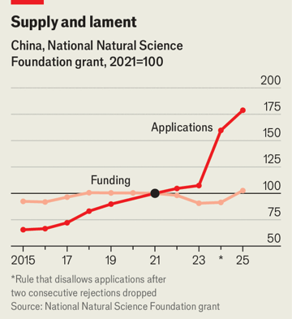

中国大学很有钱，但也在被挤压
China’s universities are rich. But they’re getting squeezed
科研人员逃不开疲弱的经济
- 中国高校经费仍在增长，但增速已从 2010 年代后期的每年 10% 降到年均 3.5%；连 75 所中央直属名校里也有五分之一在今年被削减预算。这一趋势还在延续。
- 地方财政被房地产拖累，全国 2900 所高校有 95% 靠地方供养；青年失业率高达 19%，博士生招生自 2019 年翻倍到 20 万人，学术岗位却更少。压力层层向下传导。
- 国家自然科学基金的申请量自 2021 年增长 80%、达到 20 万份，但拨款只增 3%，成功率从 22% 降到 12%；晋升压力还催生论文工厂与行贿发表。青年学者最吃亏。
- 总量看，高校科研支出去年增 11% 到 3410 亿元，但企业出资占比上升、更偏名校与应用；作者认为紧预算可能逼出更高质量，代价是初级学者前景黯淡。
在与中国的竞争中，美国有时会自伤。在唐纳德·特朗普治下，联邦政府对大学的支持被削减，破坏尤其大。为表达痛苦，一些美国科学家特意强调，这场收缩可能让美国的战略对手占到便宜。去年，哈佛大学一位学者抱怨，中国「被银盘托着」送上了未来。
在中国，从事人工智能、机器人等官方青睐领域前沿研究的学者经费充裕。但那位哈佛学者可能会惊讶地发现，在许多校园里，教职工的情绪是低沉的。尽管当局急于推动科学事业，但对谁能拿到国家资金变得更有选择性。4 月，教育部表示近年已撤销 12200 个学位项目，主要是「工商管理」这类软学科，许多被替换成 AI 等官方看重的专业。
这十年，中央和地方政府在科技上的支出年均只增长 3.5%，而 2010 年代后期是 10%。这类支出覆盖从博物馆到社会科学的各个门类，但物理、化学等院系也感受到了压力。政府对自然科学院系的支出增长更慢。一些大学预算被削减。9 月，北京大学等几所高校发布新通知，要求「厉行节约、过紧日子」。一些机构削减了研究人员的薪酬和福利，有时整个学位项目被砍掉。
自 1990 年代以来，中国大学快速扩张，教研人员的生活条件大为改善，大学的国际地位也迅速上升。据《泰晤士高等教育》，2017 年只有两所中国大学进入世界前 100，今年有八所，其中清华、北大分别排在全球第 11 和第 13，为亚洲最高。
对习惯了宽松日子的中国学者来说，紧日子是痛苦的冲击。即使是由中央财政支持的 75 所顶尖高校，也有部分在被挤压。它们的预算中位数今年增长 6.8%，但五分之一遭遇削减。一些学校把研究生奖学金的数量和金额砍掉一半以上。
中国经济走弱是部分原因。除顶尖高校外，许多大学严重依赖地方政府拨款，而地方财政正被房地产长期低迷拖累。全国 2900 所高校中，95% 由地方负责。本刊查阅的文件显示，就连深圳、杭州这两个官方青睐的科技重镇，今年预算也被削减 5% 以上。
经济仍增长 4.5%，但创造不出足够的新岗位来吸收创纪录的毕业生：青年失业率是 19%。于是更多人留在校园。博士生年招生规模自 2019 年以来几乎翻倍，达到 20 万人。留在学术界的人要争夺不断缩水的政府经费。博士后工作变得没有保障，晋升要求用一位学者的话说是「不人道」。

学者往往需要拿到课题才能往上走。自 2021 年以来，国家自然科学基金——中央政府科学经费的主要来源——主项目的申请量增长了 80%，达到 20 万份，但拨付金额只增长 3%。申请成功率从 2013 年的 22% 降到了去年的 12%。今年该基金把对青年研究者的资助提高了 50%，部分也许是为了安抚不满。
恢复好心情很难。约克大学的查强说，大学越来越多采用西式用人制度，学者往往要熬很多年才能拿到终身职位。有人抱怨，学校招初级研究人员是为了冲科研产出，因预算更紧，根本没打算给长期位置。如今在学术界求职或晋升如此艰难，许多人选择离开。深圳中学就雇了 100 多名博士。
正如官方主要喉舌《人民日报》上月指出，中国大学并没有「没钱了」。至少总量上，它们在拿到更多：官方数据显示，去年高校科研支出增长 11%，达到 3410 亿元人民币（470 亿美元）。但企业——包括民营企业——提供了其中越来越大的一部分。在有数据的最近一年 2024 年，企业提供了高校新增科研经费的一半。但企业对那种无助于培养可商业化人才和技术的科研兴趣不大，而且更青睐名校。
手紧也可能有好处。普林斯顿大学的谢宇（同时主持北大一个中心）说，中国大学快速扩张时，晋升常与发表数量而非质量挂钩。现在大学必须在更紧的预算下更有辨别力，产出更多突破。
但正如一位学者所说，发表压力会诱发造假。「论文工厂」在淘宝等电商平台上打广告。一些研究者被抓到为发表行贿。网络侦探（包括退学的博士生）挖出学术不端，把教授拉下马。一些省级政府正在调查一种做法：学者付钱让企业「资助」自己的研究，以完成晋升所需的课题指标。在一项小规模政府调查中，五分之一受访者承认这么做过。
不过，多数初级学者还是在前途黯淡的情况下埋头做研究。也有人会爬到学术金字塔顶端。和中国出口部门一样，激烈竞争有助于催生冠军级的想法。■